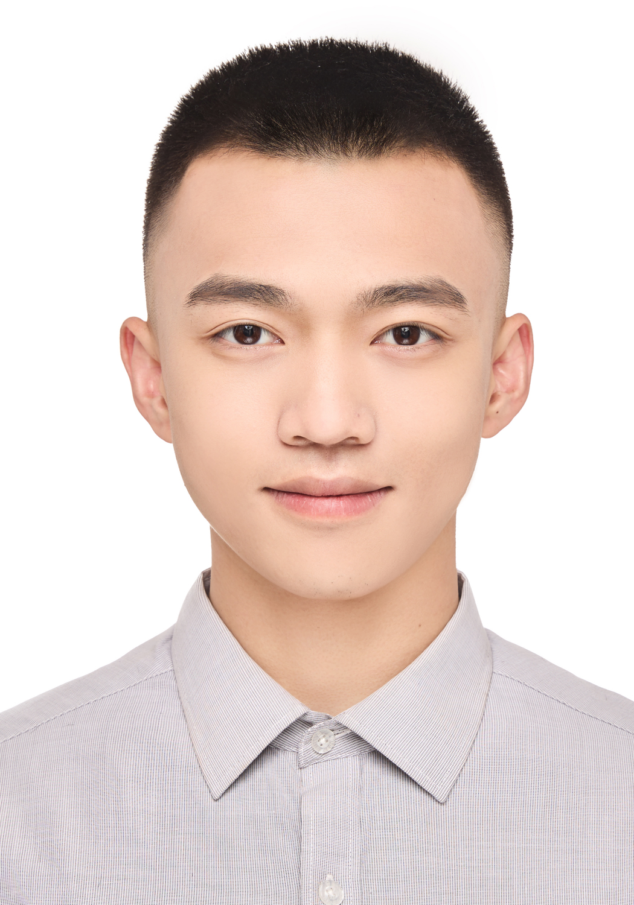
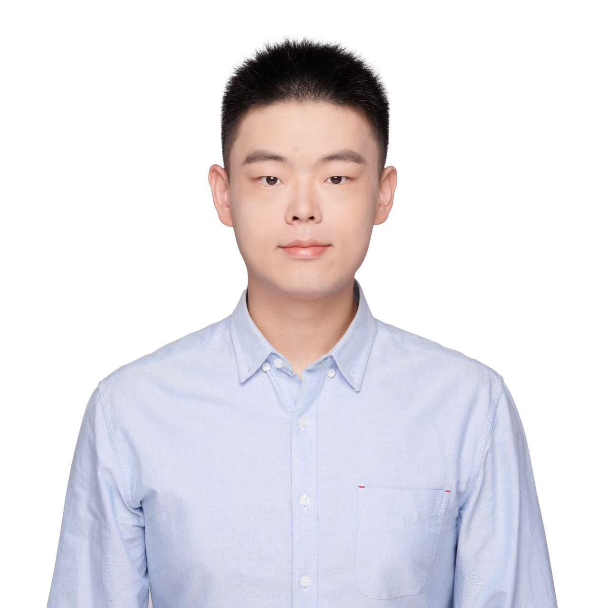

ET
DASwiss-style SPA with editable text, step-by-step reveal, and a download button for the edited copy.
EXPERIENCESpring Boot validates sentiment, stores impact, and exposes a read-only API for the presentation.
API + LOGICMySQL keeps prices, news, sentiment, and impact rows cached so the UI can read from one place.
CACHE + FRESHNESSFetched per ticker every 15 minutes, deduped by external article id, then stored before the UI reads it.
FINNHUB_KEY_NEWSA separate price key protects quote refresh from news-poll quota pressure; Twelve Data can stand in for quotes.
FINNHUB_KEY_PRICEIf providers fail, reads still return cached rows with freshness labels instead of an empty demo screen.
HONEST DEGRADATION{
"label": "NEGATIVE",
"score": -0.82,
"confidence": 0.97
}
The user sees the headline and the holding in the same breath.
Provider fallback and stale/asOf keep the demo alive and honest.
The pace is fixed: team, problem, news, demo, engine, roadmap, close.